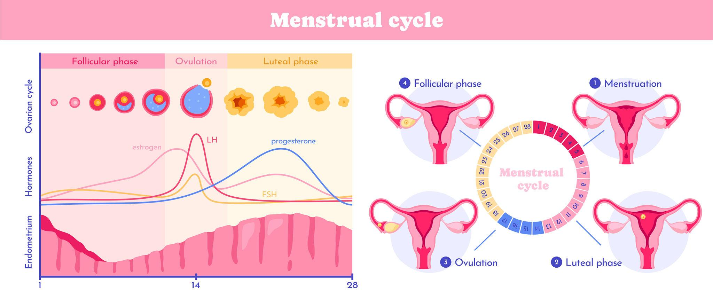

What is a normal period?
A menstrual cycle is counted from the first day of one period to the first day of the next. Typical adult cycles last 21 to 35 days, and periods usually last 2 to 7 days with an average total blood loss of 30–80 ml.
-
Cycle length: 21–35 days Urefu wa mzunguko: siku 21–35
Small shifts of a few days between months are common and healthy.
-
Bleeding duration: 2–7 days Muda wa hedhi: siku 2–7
Flow is often heavier during the first two days before tapering off.
-
Typical volume: 30–80 ml Kiasi cha damu: 30–80 ml
Roughly 4 to 12 fully soaked regular pads or tampons across the entire period.
-
Normal colour range Rangi ya kawaida
Bright red, dark red, and brown blood are all normal at different stages of your period.

When to seek medical advice
Speak with a healthcare provider if you notice any of these signs:
-
Very heavy bleeding Kutokwa damu nyingi sana
Soaking through a pad or tampon every hour for several consecutive hours, or passing large clots.
-
Periods lasting longer than 7 days Hedhi inayodumu zaidi ya siku 7
Prolonged heavy bleeding (menorrhagia) can lead to iron-deficiency anaemia and should be evaluated.
-
No period for 3 or more months Kukosa hedhi kwa miezi 3 au zaidi
When not pregnant, absent periods (amenorrhoea) may point to PCOS, thyroid disorders, or hormonal imbalance.
-
Severe pain or bleeding between periods Maumivu makali au kutokwa damu kati ya hedhi
Cramps that prevent normal daily activities or do not respond to painkillers, as well as bleeding between cycles or after sex.
Menstrual hygiene & cycle tracking
Menstrual hygiene
- Change pads or tampons every 4–8 hours to prevent irritation, odour, and infection.
- Wash the external genital area daily with plain clean water.
- Avoid douching or scented soaps inside the vagina — they disrupt natural protective pH.
- Well-washed reusable cloth pads and medical-grade menstrual cups are safe, sustainable options.
Tracking your cycle
- Mark Day 1 (the first day of bleeding) each month on a paper calendar or app like Clue or Flo.
- Note daily flow intensity (light, medium, heavy) and how often you change products.
- Log pelvic pain, headaches, energy dips, or spotting between periods.
- Bring your cycle log to medical visits — it speeds up accurate diagnosis.
Common questions
Mild cramping is normal as the uterus contracts to shed its lining. Severe pain that stops daily activities is not normal and should be investigated for causes like endometriosis or fibroids.
Yes. Light to moderate exercise releases endorphins that can ease cramps and lift mood. Listen to your body and rest on days when fatigue or bleeding feels heavier.